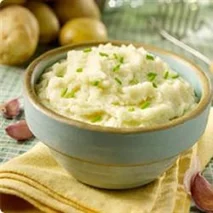

Mashed Potatoes

Description
Bake in the preheated oven until the top is browned and the casserole is bubbling, 25 to 30 minutes.
Per Serving:226 calories; protein 6g; carbohydrates 36g; fat 7g; cholesterol 15.9mg; sodium 42.9mg.
Ingridents
- 3 Yukon Gold potatoes, peeled and chopped
- ⅓ cup milk
- ¼ cup sour cream
- salt and ground black pepper to taste
Steps
- Place potatoes into a large pot and cover with salted water; bring to a boil. Reduce heat to medium-low and simmer until tender, about 20 minutes. Drain.
- Mash potatoes with milk, sour cream, salt, and pepper in the large pot.